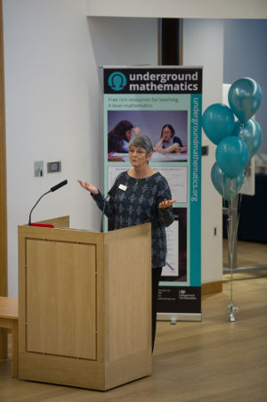

|
|
 |
|
Written by Lynne McClure, co-director of Underground Mathematics
 We do like a party! Having 'soft' launched the new site earlier in the year, recruited our first group of champions and delivered our first couple of webinars, we decided that the time was right to invite friends to join us in a morning of celebration, involving balloons, bubbly, cake, and, of course, some maths.
Nearly a hundred of our colleagues, partners, supporters and funders gathered together to hear short presentations from invited speakers. Anna, on behalf of the team, reminded us of the Underground Mathematics philosophy and how it plays out in the resources on the site. Linda Cunningham, from Ranelagh School, described what being an 'Underground Mathematics school' means and how the philosophy and resources impact on the work she, her colleagues and their students do in the classroom. The Pro-Vice-Chancellor for Education at the University of Cambridge, Graham Virgo, emphasised the importance and relevance that projects such as this has to the University - an excellent example of harnessing the expertise of the faculty with that of those at the chalk face. The presentations concluded with Vanessa Pittard from the DfE who reaffirmed the intention to support teachers in making sense of mathematics in a connected, deep way.
And then it was #mathswithMartin time! We always feel that it's important that at events with colleagues we should take the opportunity to do some maths as well as talk about it. Martin rolled up his sleeves and led us through a piece of unusual but accessible mathematics, to everyone's delight. The morning concluded with an invitation for all to explore different aspects of the site at the various stations set up around the room, lunch, and the aforementioned cake. Thank you to everyone who made it to Cambridge to celebrate with us, and a big thank you to those who continue to support our work. What an engaging way to end the week…
|
|
In the spotlight: Your mathematical classroom
|
|
|
We have a new area of the site that contains support for teachers using our resources in the classroom and opportunities to reflect on classroom practice
Your mathematical classroom has 6 sections that each have a different focus. Each of our bundles is a small collection of resources put together not by content area like our stations, but with a particular focus in mind. So far we have two bundles; Developing a mathematical classroom and Using student work as a resource. Personally, or as a department, you may wish to support the use of the bundles watching recordings of the webinars that run alongside.
The resources in action page contains detailed teacher support for a small number of resources, and can include preliminary and follow up tasks, sample student work and videos of students working on the tasks. This work is designed to help teachers get the most out of our resources and may be useful for departments looking to embed rich tasks within their curriculum.
The teacher perspective offers a chance to read about teachers using the resources in their own classrooms and will be continually updated with new posts, many of which will be written by our Champions. The Professional development sections details the free courses run by MEI entitled ‘Underground Mathematics: Resources to address the requirements of the new A level’.
|
|
Yvonne Scott, one of the Underground Mathematics Champions, shares her perspective on using the resource Quadratic solving sorter with her students
I chose this resource for Y12 Further Maths students, as I wanted to see what they knew about quadratics and could remember from GCSE rather than teach them the skills again. I gave out the cards and asked them to sort them into groups as suggested in the teacher notes. I did not give them any guidance on this as I wanted them to choose how they sorted the quadratics.
Most students started to think about how they could solve the quadratics which showed me that they had an understanding of the different methods. There was one group who chose to sort on the coefficient of x^2, which although trivial, allowed me to have a conversation about why that might or might not be important and what else they could sort on. One group who had already sorted on methods of solving were challenged to sort on another quality. This group then started to sort on translations - horizontal/vertical/both. This group decided that quadratics of the form x^2 – ax only moved horizontally. When challenged about the students found it difficult to give a convincing argument as to why the graph only moved horizontally. Which made me realise that they had not fully understood the purpose of completing the square.
I like that resource has supporting materials which gives weaker students access if they could not come up with a strategy for sorting the quadratics. We finished the lesson by looking at the way the quadratics had been sorted by the Underground Maths team. Trying to decide why the quadratics were in a particular group was a great discussion and one we have still not resolved!
As with all Underground Maths resources that I have used the students fully engaged in the task and the discussion with students, between students and with me, was rich and diverse – I often find myself in another area of maths that is not the original starting point – in this case translations not just solving quadratics. The students enjoyed the task – although some did say they would prefer questions – but most felt that it helped them consider quadratics in different ways especially when the group were discussing it together.
|
|
Underground Mathematics to host #mathscpdchat
|
|
|
On Tuesday 22 November, 7-8pm (GMT)
Underground Mathematics and our excellent group of Champions invite you to join us on Tuesday, 22 November at 7-8pm (GMT) on Twitter to discuss rich tasks and A level maths. Our Champion teachers and some of our team would love to start a conversation on the topic -- Rich tasks to support teaching of A-Level mathematics: in what ways do you use them?
Follow the discussion on the #mathscpdchat twitter page or check in with @UndergroundMath, @RBeckett_Yd or @ColleenYoung. We'd love to hear your ideas, contributions, and thoughts. We look forward to a fruitful discussion!
|
|
Join our closed Facebook group
|
|
|
This month, we are introducing a closed Facebook group to create an online space where teachers using Underground Mathematics can support each other and share ideas. If you'd like to join the discussion with fellow teachers, please join UMchat here Everyone who is interested in using rich tasks in mathematics is welcome - please feel free to spread the word and invite your colleagues and friends!
|
|
New and updated resources
|
|
|
A selection of resources that are new to the site are shown below; to see all the resources published in the last month click here
Slippery areas
In this problem students are invited to explore what happens to areas under graphs when the graphs are stretched or translated. It could be used as a way to start thinking about integration by substitution.
 Trig gradient match Trig gradient match
Students are asked to pair up graphs of certain trig functions and their gradient functions and then sketch some missing graphs. It could help students to recognise how their knowledge of transformations fits with calculus of trigonometry.
Integral sorting
Students are asked to pair up cards containing integrals and their answers, as well as find a suitable substitution that could be used to solve the integral.
Which substitution?
Students are asked to do the same integral twice, using a different substitution each time. The problem highlights that you can arrive at different answers because of this, and asks students to think about how the two answers are related.
|
|
Underground Mathematics community
|
|
|
The Underground Mathematics site is accessible to all, and its design is rooted in teacher experience. So we would value any contribution you can make by sharing your experiences of using our resources with your students. You can join the conversation by creating a login for the site and using the ‘Discuss’ link that appears at the top of each page.
Our Twitter feed is @UndergroundMath, where we regularly tweet resource suggestions, events we are involved in and any interesting maths we come across. You can also find Underground Mathematics on Facebook here.
|
|
Over the next few months you can find the team at the following conferences
#mathscpdchat with Underground Mathematics, Online, 22 November 2016, 7-8pm (GMT)
FMSP: Sixth Form Student and Teacher Problem-Solving Conference, Cambridge, UK, 5th December.
Level 3 Maths Leads’ National Workshop, London, 5th December. This Maths Hub conference will include a 15 minute presentation about Underground Mathematics by Heidi Steele, one of our Champions, to Level 3 Maths Leads from each Hub.
|
Centre for Mathematical Sciences
University of Cambridge
Wilberforce Road
Cambridge
CB3 0WB
01223 766857
info@undergroundmathematics.org
https://undergroundmathematics.org
|
|